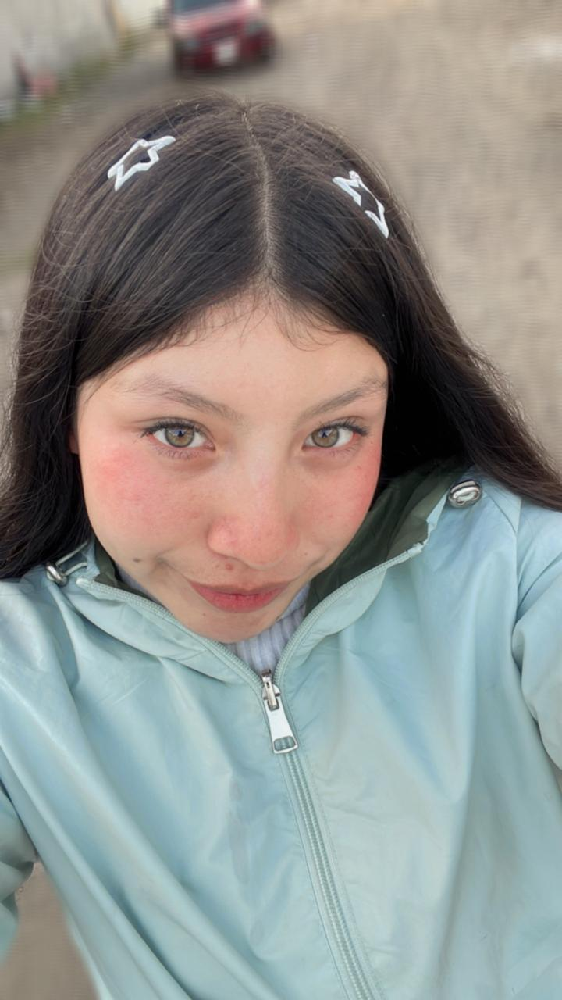
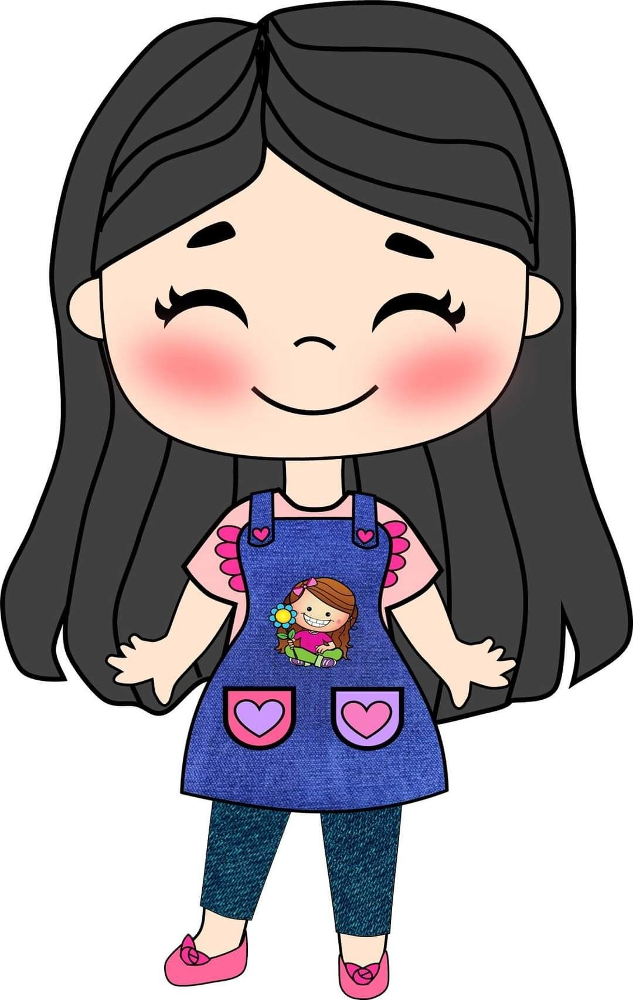
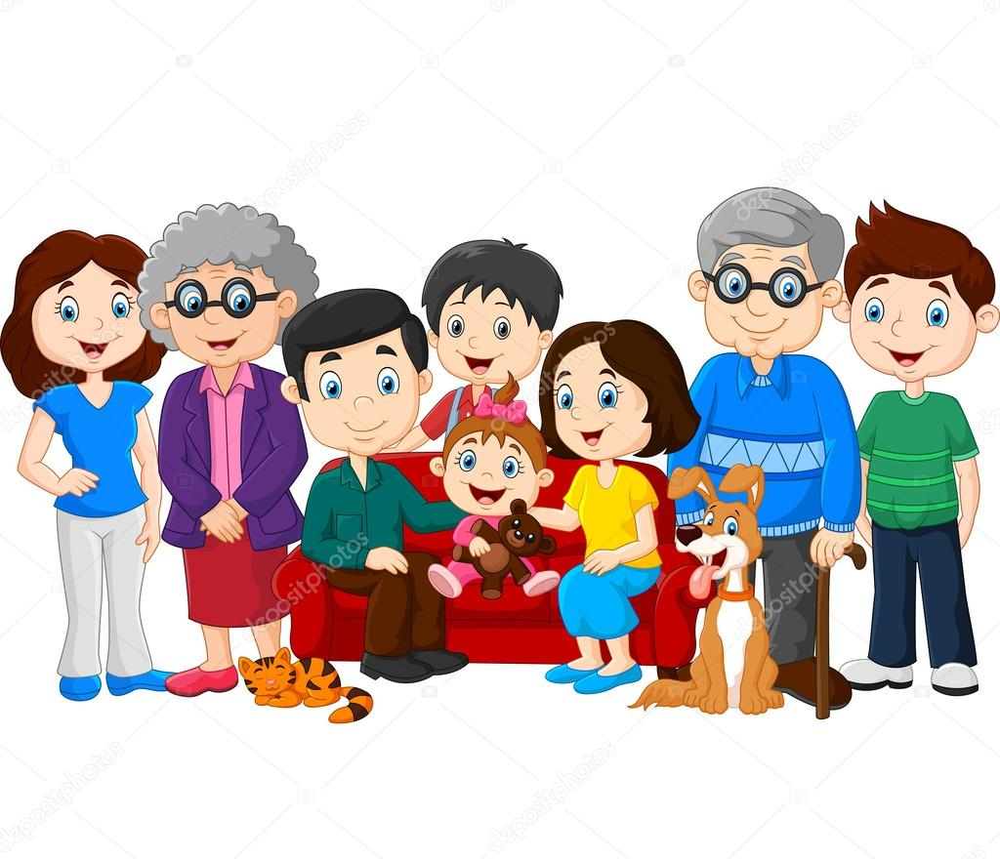
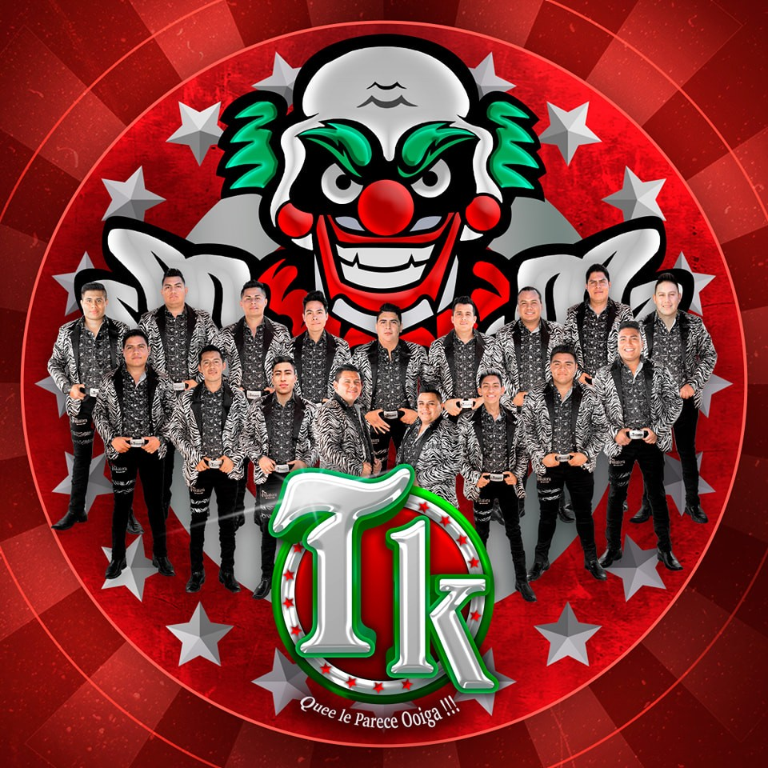
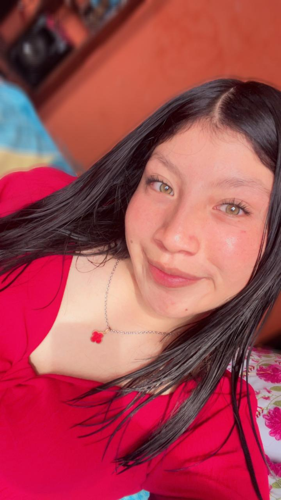
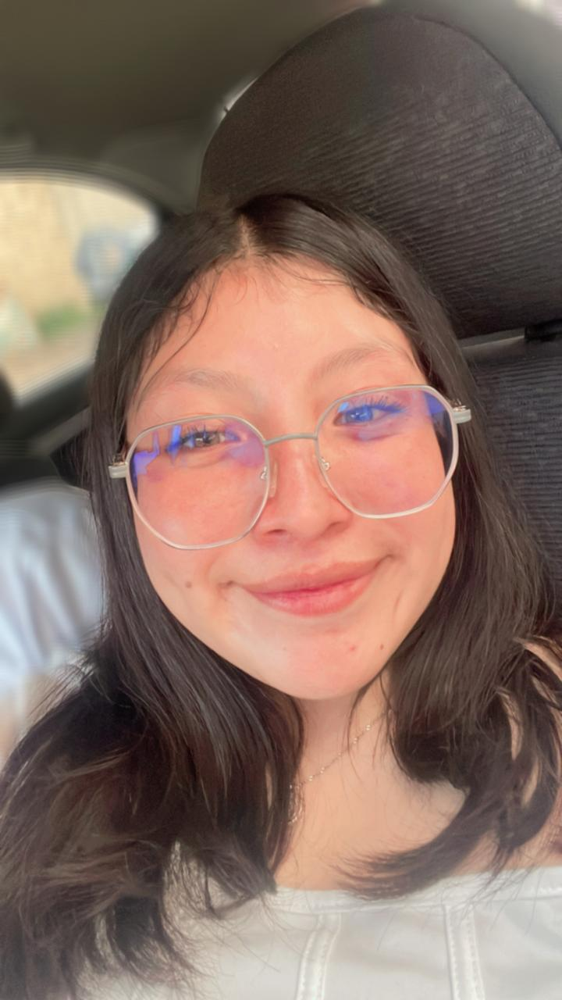
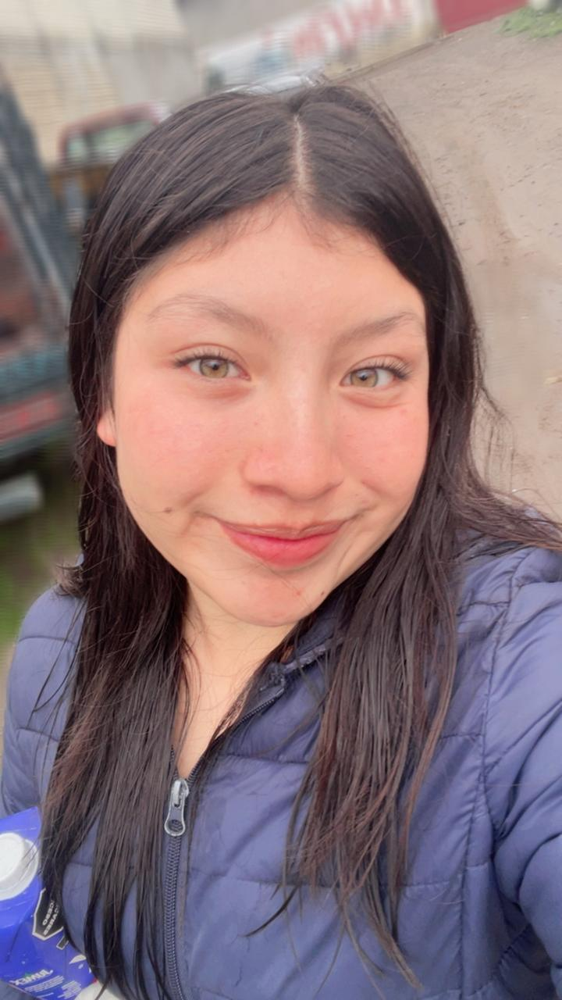

Soy Diana Karen Nicolas Huerta, tengo 16 años, nací el 26 de octubre del año 2008, soy una niña muy alegre, risueña, me gusta escuchar música, soy muy tímida, también soy muy sensible en cómo me traten o cómo me hablen, a veces me estreso mucho cuando se me junta la tarea. Me gusta el color de mis ojos, soy de piel blanca, estoy muy bajita, me gusta salir con mis amigos, me gusta ir a los bailes, me gusta que me regalen flores o chocolates, me gusta ir a la playa.
Bibliografía
Mis metas y sueños
Terminar la prepa, y terminar mi carrera que es ser maestra de preescolar, también tener mi propia casa y tener mis cosas propias.

Momentos importantes
Es estar al lado de mi familia y de todos mis seres queridos, ya sean mis amigos, al igual estar con la persona que amo.
Cultura actual
Me gusta salir con mis amigos, también me gusta la banda, también me gusta ir a bailes ya sea de banda.
Galería De Fotos
Diana
  Carta a mi yo del futuro
Contador
Tiempo en la página: 0 segundos